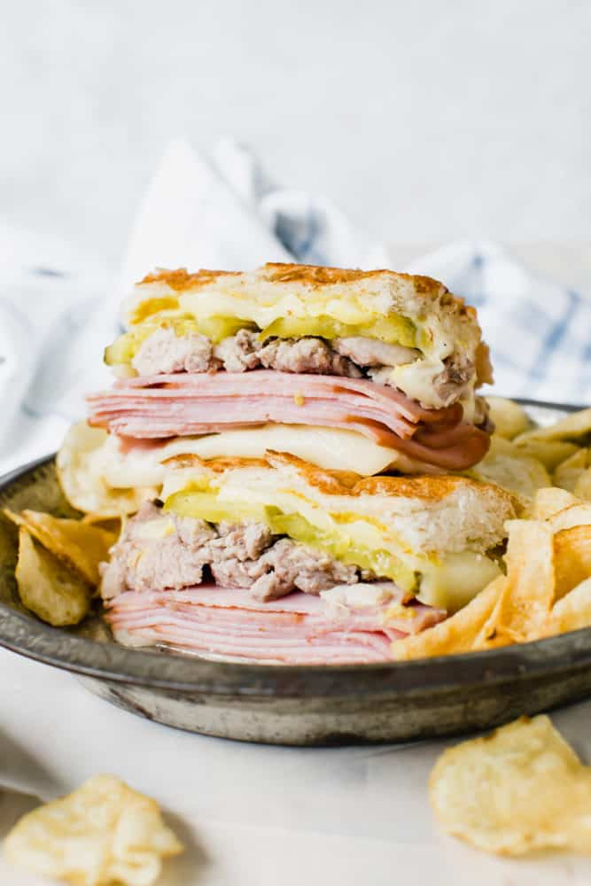

The Cuban Sandwich

A Symphony of Pork
This hearty sandwich is all about the layers and each one plays a significant flavor roll in taste. The main
ingredient, however, is the two kinds of pork. Layers and layers of smoked ham are paired with thinly sliced
pork tenderloin. The Cuban is the ultimate sandwich combining the tangy and tart taste of pickles and mustard
with the melted swiss cheese and pork.
Ingredients
Pork Tenderloin
- 1 lb pork tenderloin
- 1/4 cup olive oil
- 1/4 cup orange juice
- 2 tablespoons lime juice
- 3 garlic cloves minced
- 1 teaspoon dried oregano
- 1/2 teaspoon cumin
Sandwich
- 1 cuban bread loaf
- 1 lb swiss cheese sliced
- 1 lb smoked ham sliced
- 1 cup dill pickles sliced
- 1/4 cup mustard
- 2 tablespoon butter
Instructions
Pork Tenderloin
- Preheat the oven to 375ºF and line a rimmed baking sheet with foil.
- Place the pork tenderloin on the prepared baking sheet. In a small bowl whisk the olive oil, orange juice,
lime juice, garlic cloves, oregano, and cumin together and pour over the pork.
- Cook for 30 to 40 minutes or until the meat reaches an internal temperature of 145ºF. Thinly slice the meat
and set aside.
Sandwich
- Slice the loaf of bread in half lengthwise and then cut into 4 equal parts.
- Begin layering the ingredients by adding half of the cheese to the bottom layer of the sandwich bread. Top
with the smoked ham, sliced pork, and pickles. Place the remaining cheese on top. Spread mustard on the top
piece of bread and place on the sandwich.
- Melt the butter in a skillet or griddle over medium heat. Add the sandwiches and set a heavy skillet, such
as an iron skillet, on top of the sandwiches to press them down. Once toasted flip the sandwich and repeat.
- Slice the sandwiches in half before serving.
Back to home